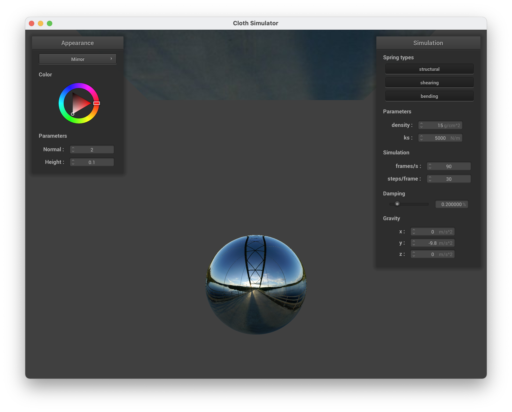

Part 5: Shaders
Questions:
- Explain in your own words what is a shader program and how vertex and fragment shaders work together to create lighting and material effects.
- Explain the Blinn-Phong shading model in your own words. Show a screenshot of your Blinn-Phong shader outputting only the ambient component, a screen shot only outputting the diffuse component, a screen shot only outputting the specular component, and one using the entire Blinn-Phong model.
- Show a screenshot of your texture mapping shader using your own custom texture by modifying the textures in /textures/.
- Show a screenshot of bump mapping on the cloth and on the sphere. Show a screenshot of displacement mapping on the sphere. Use the same texture for both renders. You can either provide your own texture or use one of the ones in the textures directory, but choose one that's not the default texture_2.png. Compare the two approaches and resulting renders in your own words. Compare how the two shaders react to the sphere by changing the sphere mesh's coarseness by using -o 16 -a 16 and then -o 128 -a 128.
- Show a screenshot of your mirror shader on the cloth and on the sphere.
Answers:
- A shader program is a separate program run on GPU that renders the graphics for another program. Vertex shaders are responsible for reading and writing all per-vertex values such as positions, normals, uv's, and tangents. Fragment shaders are responsible for writing all per-pixel values by taking the output of vertex shaders and outputting colors. Vertex and fragment shaders work together to create lighting and material effects.
-
The Blinn-Phong shading model is a rough way to estimate lighting at a
location by breaking it down into three components: ambient component,
diffuse component, and specular component. Ambient component accounts
for lights that have been reflected multiple times. Diffuse component
accounts for diffuse lighting. Specular component accounts for specular
reflection. Here are four screen shots showing ambient component,
diffuse component, specular component, and all three components.
-
Here is a screenshot of texture mapping shader.
-
Here is a screenshot of bump mapping on the cloth and on the sphere and a
screenshot of displacement mapping on the sphere.
-
Here are two screenshots of mirror shader on the cloth and on the sphere.
- 